Things To Do
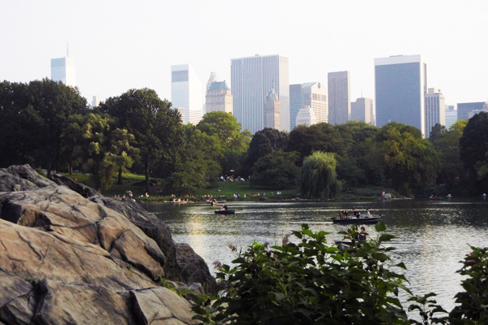
Central Park
Rain or shine, Central Park is a must-see. It's a beautiful escape from the craziness
of the city, perfect for long walks, row boating, people watching, picnicking, enjoying world
class street musicians, and so much more.
Extra A few blocks south of the park, there's this great little French restaurant
called Le Bonne Soupe. This local favorite
is one of the few restaurants that hasn't come and gone over the years, and if you eat there,
you'll understand why.
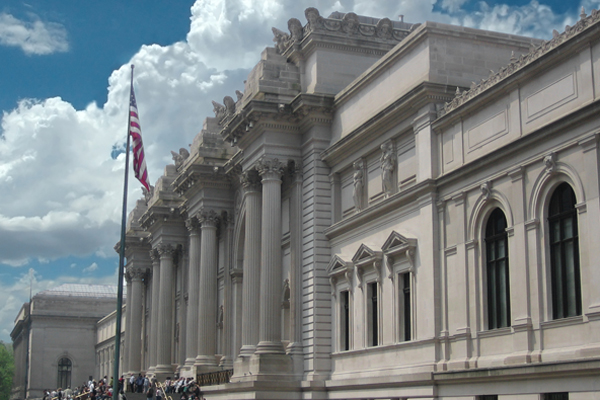
Metropolitan Museum of Art
Right along the eastern side of Central Park, you'll find the Metropolitan Museum of Art. In my opinion, this historical art museum is right up
there with London's National Gallery and the Louvre in Paris - in other words, not to be missed.
Extra While the MET's collections are outstanding, their cafe is ridiculously overpriced.
I recommend saving your money and eating elsewhere.
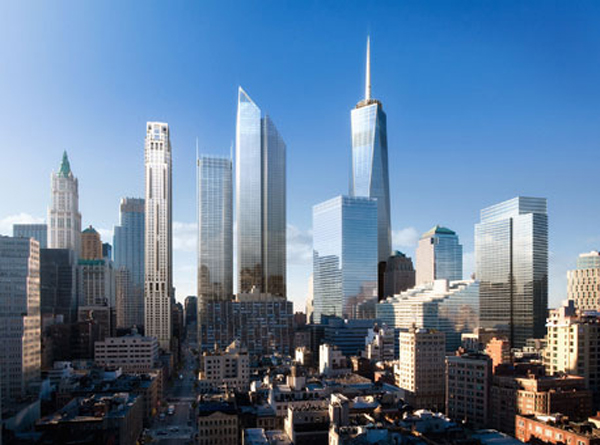
Lower Manhattan
Visit lower Manhattan. It's a bit businessy, maybe even touristy, but dig a little deeper and you'll find
a whole lot of history, including Castle Clinton,
Trinity Church, and Fraunces Tavern. This is also the area where you'll find the
9/11 Memorial Museum.
Extra Battery Park has some great
views of the Statue of Liberty and Ellis Island, but the boats that take you to those sites are crowded and
overpriced. I recommend taking a water taxi instead.
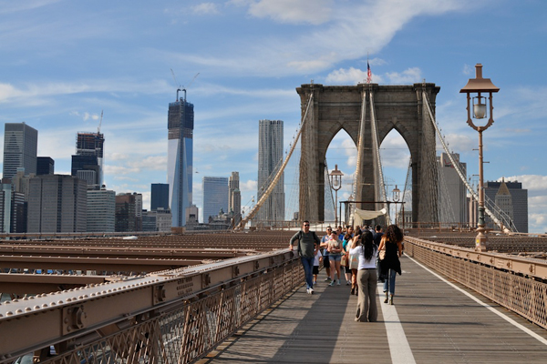
Brooklyn Bridge & DUMBO
If the weather's nice, walk the Brooklyn Bridge. It's a full of gorgeous NYC views, and that will take you to
Brooklyn Bridge Park and
Brooklyn's DUMBO neighborhood.
Extra Check out Jacques Torres, a
famous French bakery in DUMBO that you will not soon forget. Then, take a New York Water Taxi back to Lower Manhattan and enjoy views of the Statue of Liberty and
Manhattan skyline along the way.
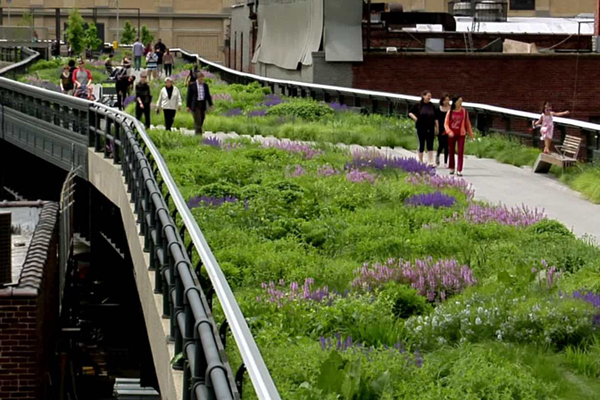
The High Line
The High Line is a public park built on a historic
freight rail line elevated above the streets on Manhattan’s West Side. It's part walking trail, part sculpture
garden, and a great break from the busy city streets.
Extra Start from the northern side and then explore
Chelsea
and
Greenwich Village at the end.
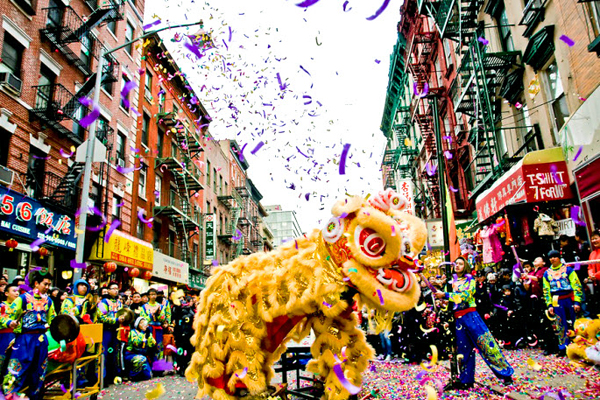
China Town
Check out China Town. It's a treasure
trove of authentic Chinese food. From eerily convincing knock offs of high fashion brands to every kind of
tchotchke you could possibly imagine, this neighborhood is the perfect place to haggle for gifts and souvenirs.
Extra Look for Aji Ichiban's. It's a Hong Kong-based candy store chain that is packed with all
kinds of delicious and exotic sweets.
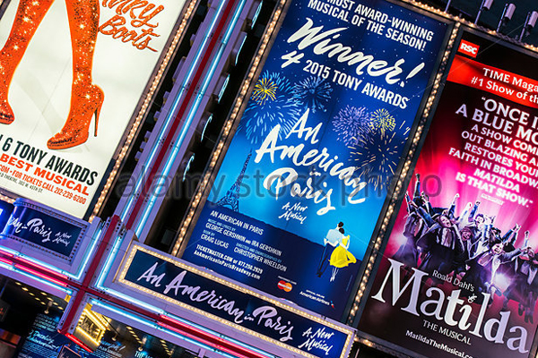
Broadway Theater District
NYC is home to some of the best theater in the country. If you have the money, go see a
Broadway show.
Off-Broadway shows
can be very good, too, sometimes so good, they end up on Broadway (Rent, for example).
Extra Hang out by the Broadway stage doors, as the actors often come out and greet fans
there after a performance.
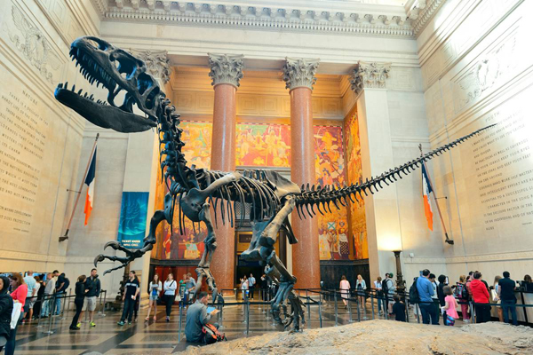
American Museum of Natural History
The American Museum of Natural History is home to
the largest human evolution exhibit in the world as well as the famous
Hayden Planetarium,
run by Neil deGrasse Tyson.
Extra This museum is located in the
Upper East Side, where lots of celebrities, including Tina Fey, Louis CK, Bono,
Matt Damon, and Al Pacino. The restaurants in this area are worth every dime. My favorites include
Nice Matin and
Tessa.
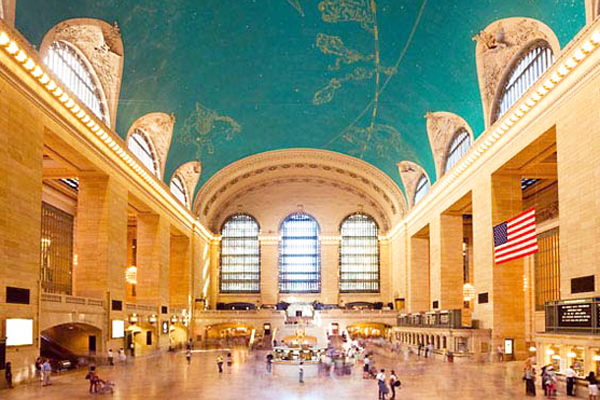
Grand Central
Grand Central Station is an architectural beauty,
not to mention an iconic NYC stop. The food at Grand Central is worth checking out too. The Oyster Bar is legendary.
Extra You can take day trips in and out of NYC from Grand Central Station. For example, it only takes about
an hour to get to New Haven, CT, from Grand Central - home of Yale University and some stellar dining opportunities, like
Claire's Corner Copia.
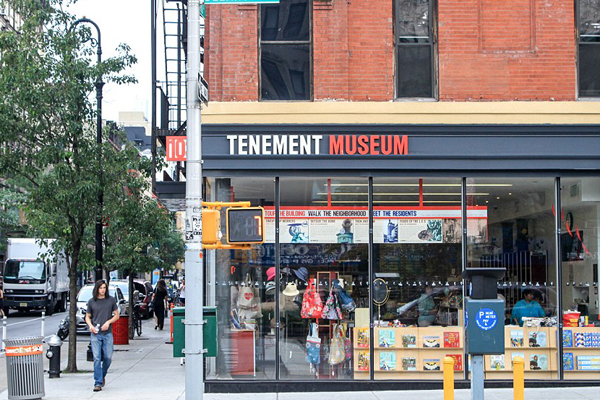
Tenement Museum
The Tenement Museum building was once home to
nearly 7,000 working class immigrants during the late 1800s/early 1900s. Today, the museum showcases what life was like
for those immigrant families. They also provide historical walking tours of the
Lower East Side.
Extra If you want to splash some more history into your day, check out these Lower East Side bars, modeled
after the prohibition-era speakeasies, The Back Room and
Nitecap.
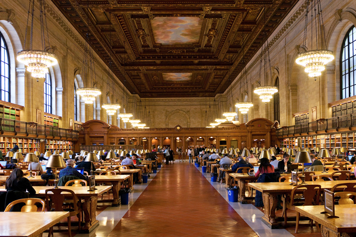
New York Public Library
The New York Public Library is worth a trip. Not only
is it an architectural masterpiece, it's widely regarded as one of best public libraries in the country.
Extra It's where the beginning of the first Ghostbusters movie was filmed. It's also home to
random memorabilia from great literary figures, including Charles Dickens's letter opener, Truman
Capote's cigarette case, and Jack Kerouac's crutches.
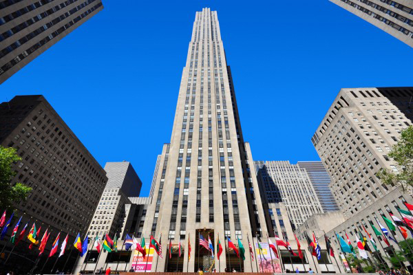
Rockefeller Center
Rockefeller Center is the home of NBC Studios.
It's where Saturday Night Live is filmed, along with a ton of other NBC shows. It's fun to tour and the view from
the "Top of the Rock" is great.
Extra Every winter, Rockefeller Plaza is turned into that famous ice skating rink that you've seen
in so many movies.
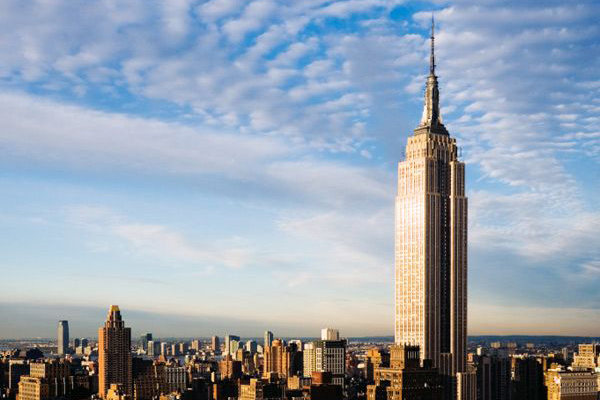
The Empire State Building
The Empire State Building is a gorgeous
example of Art Deco architecture and the roof (or close to the roof) is probably the best nighttime view
of NYC.
Extra If you have the money, the express experience is way faster and better than being
trapped in lines with crowds of tourists for hours.
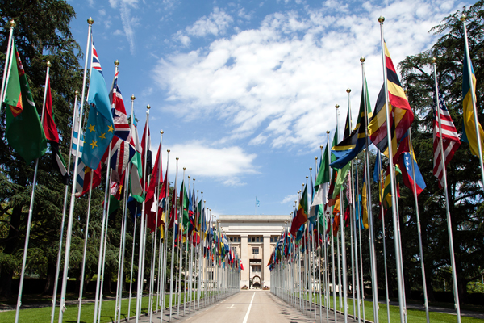
The United Nations
The United Nations is in NYC. The tours are fascinating,
partly because of what they do there and partly because of all the beautiful artwork that's been gifted to
them from countries all over the world.
Extra Travel light the day you tour and expect some heavy, TSA-style security checks at the
entrance.
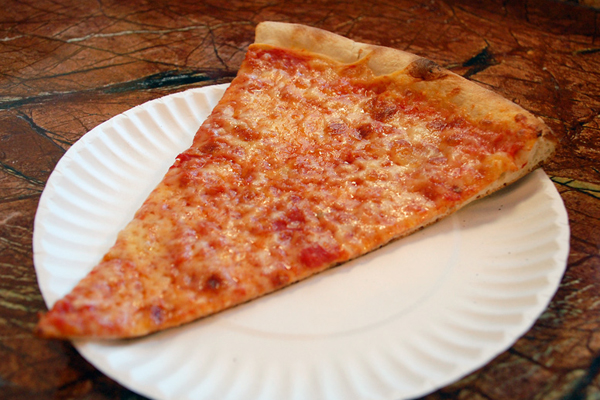
NYC Pizza
There is NOTHING like a slice of NYC pizza. Pizza joints are cheap and everywhere. Don't miss it!
Extra Here's a couple to check out if you're near: Da Vinci Pizza, Grimaldi’s Pizza,
and Roselli’s Pizza.